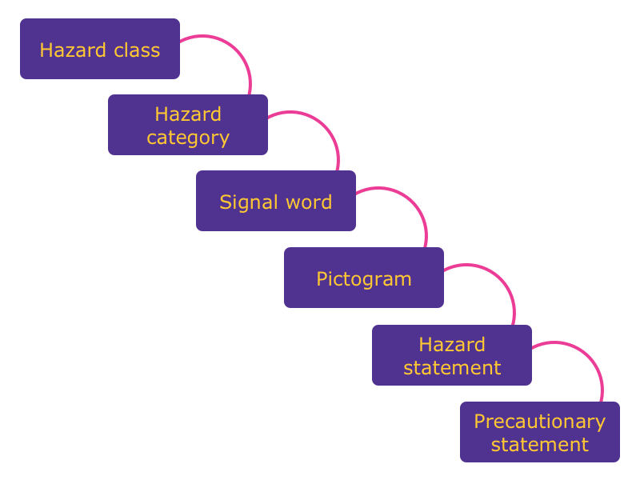
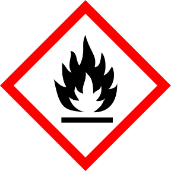
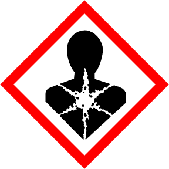
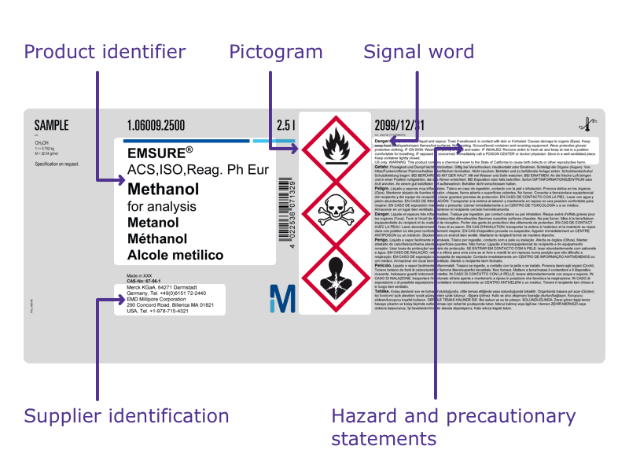
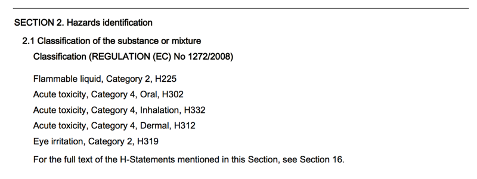

Treinamento GHS - os elementos-chave da comunicação de perigos (nível 1)
Prefácio
O Sistema Globalmente Harmonizado de Classificação e Rotulagem de Produtos Químicos (GHS) foi desenvolvido pelas Nações Unidas ao longo de mais de uma década de intenso trabalho. É um documento “vivo” que será regularmente revisado e atualizado uma vez a cada 2 anos para refletir novas experiências nacionais, regionais e internacionais no campo da comunicação de perigos.
Propósito
- Reforçar a protecção da saúde humana e do ambiente, fornecendo um sistema internacionalmente compreensível de comunicação dos perigos que permita
- Classificação e rotulagem harmonizadas
- Segurança no trabalho harmonizada
- Fichas de dados de segurança harmonizadas
- Protecção harmonizada dos consumidores
- Classificação harmonizada dos transportes
- Reduzir a necessidade de ensaios e avaliação de produtos químicos e facilitar o comércio internacional de produtos químicos cujos perigos tenham sido devidamente avaliados a nível internacional.
Âmbito
GHS abrange, entre outros, os seguintes elementos:
- Critérios harmonizados para a classificação das substâncias e misturas em função dos seus perigos para a saúde, o ambiente e os aspectos físicos
- Elementos harmonizados de comunicação de perigos, incluindo requisitos de rotulagem e fichas de dados de segurança.
Introdução
Este tutorial de treinamento refere-se ao “Sistema Globalmente Harmonizado de Classificação e Rotulagem de Produtos Químicos” (GHS; 5ª e 6ª edição) desenvolvido pelas Nações Unidas.
Não tem em conta as diferentes fases de implementação, a utilização de blocos de construção ou requisitos adicionais em diferentes regiões e países.
O objetivo deste tutorial é ajudá-lo a fortalecer seu conhecimento dos principais elementos da comunicação de perigos, entender rótulos e fichas de dados de segurança e tratar todos os produtos químicos com o devido cuidado.
Os conhecimentos obtidos através desta formação não são suficientes para realizar a classificação e rotulagem de substâncias ou misturas perigosas.
O tutorial de treinamento é dividido em duas partes, e um teste final subsequente:
- Parte 1: Os elementos essenciais da comunicação dos perigos
- Classe de perigo
- Categoria de perigo
- Pictograma de perigo
- Palavra de sinal
- Advertência de perigo
- Declaração de precaução
- Parte 2: Conhecimento básico de comunicação de perigos
- Classificação de perigo e elementos relevantes do rótulo
- Etiqueta
- Ficha de dados de segurança
- Teste final
Parte 1: Os elementos essenciais da comunicação dos perigos

Figura 1
Classe de perigo
A classe de perigo descreve a natureza do perigo físico, para a saúde ou para o ambiente, por exemplo, líquidos inflamáveis, toxicidade aguda, oral.
Riscos físicos
- Explosivos
- Gases inflamáveis
- Aerossóis
- Gases oxidantes
- Gases sob pressão
- Líquidos inflamáveis
- Sólidos inflamáveis
- Substâncias e misturas auto-reactivas
- Líquidos pirofóricos
- Sólidos pirofóricos
- Substâncias e misturas que, em contacto com a água, emitem gases inflamáveis
- Líquidos oxidantes
- Sólidos oxidantes
- Peróxidos orgânicos
- Corrosivo para metais
- Explosivos dessensibilizados
Riscos para a saúde
- Toxicidade aguda
- Corrosão/irritação cutânea
- Lesões oculares graves/irritação ocular
- Sensibilização respiratória ou cutânea
- Mutagenicidade das células germinativas
- Carcinogenicidade
- Toxicidade reprodutiva
- Toxicidade para órgãos-alvo específicos – exposição única
- Toxicidade para órgãos-alvo específicos – exposição repetida
- Risco de aspiração
Riscos ambientais
- Perigoso para o ambiente aquático, de curto prazo (agudo)
- Perigoso para o ambiente aquático, a longo prazo (crónico)
- Perigoso para a camada de ozônio
Categoria de perigo
A categoria de perigo define a divisão de critérios dentro de cada classe de perigo, por exemplo, “líquidos inflamáveis” inclui quatro categorias de perigo e “toxicidade aguda oral” inclui cinco categorias de perigo.
Palavra de sinal
A palavra-sinal indica o nível relativo de gravidade de um perigo e alerta o leitor para um perigo potencial no rótulo. Distinguem-se os dois níveis seguintes:
- “Perigo” é uma palavra-sinal que indica as categorias de perigo mais graves
- “Aviso” é uma palavra-sinal que indica as categorias de perigo menos graves
Ex.: Classe de perigo: Líquidos inflamáveis
| Critérios de classificação | Categoria de perigo | Palavra de sinal |
|---|---|---|
| Ponto de inflamação < 23 °C e ponto de ebulição inicial ≤ 35 °C | 1 (mais grave) | Perigo |
| Ponto de inflamação < 23 °C e ponto de ebulição inicial > 35 °C | 2 (mais grave) | Perigo |
| Ponto de inflamação ≥ 23 °C e ≤ 60 °C | 3 (menos grave) | Aviso |
| Ponto de inflamação > 60 °C e ≤ 93 °C | 4 (menos grave) | Aviso |
Ex.: Classe de perigo: toxicidade aguda, oral (mg/kg de peso corporal)
| Critérios de classificação | Categoria de perigo | Palavra de sinal |
|---|---|---|
| ≤ 5 | 1 (mais grave) | Perigo |
| > 5 - ≤ 50 | 2 (mais grave) | Perigo |
| > 50 - ≤ 300 | 3 (mais grave) | Perigo |
| > 300 - ≤ 2000 | 4 (menos grave) | Aviso |
| > 2000 - ≤ 5000 | 5 (menos grave) | Aviso |
É bom saber: quanto menor o número da categoria de perigo, mais grave é o perigo.
Pictograma de Perigo

Ilustração 2
É bom saber: No contexto do GHS, a terminologia geral para “pictograma de perigo” é “pictograma”.
Pictograma
Um pictograma é uma composição gráfica que pode incluir um símbolo mais outros elementos gráficos, como uma borda, padrão de plano de fundo ou cor que se destina a transmitir informações específicas.
Símbolo
Um símbolo é um elemento gráfico destinado a transmitir informações de forma sucinta.
Todos os pictogramas de perigo utilizados no GHS devem ter a forma de um quadrado definido num ponto.
 Codificação dos pictogramas de perigo: as letras “GHS” e um número sequencial “01”, “02”, “03”…
Codificação dos pictogramas de perigo: as letras “GHS” e um número sequencial “01”, “02”, “03”…
Advertência de perigo
Uma advertência de perigo é uma declaração atribuída a uma classe e categoria de perigo que descreve a natureza dos perigos de um produto perigoso, incluindo, se for caso disso, o grau de perigo.
- Codificação das advertências de perigo: código alfanumérico único que consiste em uma letra e três números
- A letra “H” para a advertência de perigo
- Um número que designa o tipo de perigo:
- “2” para riscos físicos
- “3” para riscos para a saúde
- “4” para riscos ambientais
 Os códigos das advertências de perigo destinam-se a ser utilizados apenas para fins de referência. Não fazem parte do texto da advertência de perigo.
Os códigos das advertências de perigo destinam-se a ser utilizados apenas para fins de referência. Não fazem parte do texto da advertência de perigo.
Declaração de precaução
Uma declaração de precaução é uma frase que descreve as medidas recomendadas que devem ser tomadas para minimizar ou prevenir os efeitos adversos resultantes da exposição a um produto perigoso ou do armazenamento ou manuseio inadequados de um produto perigoso.
- Codificação de declarações de precaução: código alfanumérico único que consiste em uma letra e três números
- A letra “P” para declaração cautelar
- Um número que designa o tipo de declarações de precaução:
- “1” para as declarações gerais de precaução
- “2” para declarações de precaução de prevenção
- “3” para declarações de precaução de resposta
- “4” para as declarações de precaução de armazenamento
- “5” para declarações de precaução de eliminação

Ilustração 5
Os códigos de declaração de precaução destinam-se a ser utilizados apenas para fins de referência. Eles não fazem parte do texto da declaração cautelar.
Breve verificação - Parte 1
- Que pictogramas relativos à comunicação de perigos fazem parte do GHS?

Ilustração 6
- Quais classes de perigo o GHS cobre?
[x] Perigos ambientais [x] Perigos para a saúde [ ] Riscos eléctricos [x] Perigos físicos [ ] Riscos radioactivos
- O que significa o termo “categoria de perigo”?
[ ] Um identificador único para uma substância ou mistura [x] A divisão dos critérios dentro de cada classe de perigo. As categorias de perigo comparam a gravidade do perigo dentro de uma classe de perigo [ ] Classificação em várias atividades [ ] Uma declaração atribuída a uma classe de perigo [ ] Informações especiais relativas à protecção do local de trabalho
- O que significa uma atribuição na categoria de perigo 1 para um líquido inflamável?
[ ] O líquido deve ser usado primeiro [x] Categoria 1 indica uma categoria de perigo mais grave [ ] Categoria 1 indica uma categoria de perigo menos grave [ ] É um líquido de primeira classe
- Qual o nome correto do pictograma de perigo?
[ ] Zonas desérticas [ ] Toxicidade aquática [x] Ambiente
- Qual o nome correto do pictograma de perigo?

[ ] Chama [ ] Chama ardente [x] Chama sobre círculo
- Qual o nome correto do pictograma de perigo?
[ ] Carcinogênico [ ] Radioatividade [x] Perigo para a saúde
- Qual o nome correto do pictograma de perigo?

[x] Corrosão [ ] Irritação [ ] Material destrutivo
- Qual o nome correto do pictograma de perigo?

[ ] Blackjack [x] Caveira e ossos cruzados [ ] Bandeira pirata
- Qual o nome correto do pictograma de perigo? 
[ ] Bomba explodindo [x] Chama [ ] Fogo de palha
- Que termos/elementos pertencem à comunicação de perigos?
[ ] Competitividade [x] Classe de perigo [x] Palavra sinal [ ] Execução de obras [x] Declarações de precaução para prevenção [x] Pictograma
Parte 2: Conhecimentos básicos: classificação de perigo e elementos relevantes do rótulo
O GHS utiliza o termo classificação de perigo para indicar as propriedades intrínsecas de substâncias e misturas. Essas propriedades devem incluir riscos físicos, para a saúde e para o ambiente. Os fabricantes, importadores e utilizadores a jusante têm a obrigação de classificar e rotular substâncias e misturas antes de as utilizarem e/ou colocarem no mercado.
Uma substância ou mistura classificada como perigosa e contida na embalagem deve ostentar um rótulo que inclua, entre outros, os seguintes elementos do rótulo, se for caso disso:
- Todos os pictogramas de perigo relevantes para cada classificação específica
- A palavra-sinal relevante “Perigo” ou “Aviso”; se a palavra-sinal “Perigo” for utilizada no rótulo, a palavra-sinal “Aviso” não deve constar do rótulo
- Todas as advertências de perigo pertinentes de acordo com a classificação da substância ou mistura perigosa
- Todas as declarações de precaução relevantes
- Identificador do produto
- Informações do fornecedor
É bom saber: a classificação de perigo não faz parte de um rótulo – a rotulagem e os elementos do rótulo são, entre outros, derivados da classificação de perigo.
Exemplo:
Uma substância ou mistura é classificada como: lesão ocular/irritação, categoria de perigo 1
Os seguintes elementos de rótulo devem aparecer no rótulo:
Pictograma:
Palavra-sinal: Perigo Advertência de perigo: H318 Advertências de precaução: P280; P305+P351+P338; Pág. 310
Conhecimentos básicos: rótulo
Os pictogramas estão ligados a classes de perigo definidas: 
por exemplo, riscos para a saúde
É bom saber: O perigo físico “corrosivo para metais” também está ligado ao pictograma
 - Toxicidade para órgãos-alvo específicos (exposição única/repetida), categoria de perigo 1, 2 (mais grave) - Sensibilização respiratória, categoria de perigo 1, 1A, 1B - Carcinogenicidade, categoria de perigo 1A, 1B, 2 - Toxicidade reprodutiva, categoria de perigo 1A, 1B, 2 - Mutagenicidade das células germinativas, categoria de perigo 1A, 1B, 2 - Perigo de aspiração, categoria de perigo 1, 2
- Toxicidade aguda (oral/dérmica/inalação), categoria de perigo 4 (menos grave) - Corrosão/irritação cutânea, categoria de perigo 2 (menos grave) - Lesão ocular grave/irritação ocular categoria 2/2A (menos grave) Toxicidade para órgãos-alvo específicos (exposição única) categoria de perigo 3 (menos grave) - Perigo de sensibilização cutânea categoria 1, 1A, 1B
- É bom saber: o perigo ambiental “perigoso para a camada de ozônio” também está ligado ao pictograma
Elementos do rótulo
Exemplo de disposições dos elementos do rótulo GHS:

Ilustração 15
Conhecimentos básicos: ficha de dados de segurança
A ficha de dados de segurança (SDS) é o documento mais importante e aceito em relação à segurança do produto.
O SDS fornece informações abrangentes para o manuseio e uso seguros de produtos químicos, tornando-se um recurso essencial para empregadores e empregados. A implementação de todas as medidas de segurança e precaução descritas na SDS ajudará a proteger a saúde humana e o meio ambiente e garantirá um padrão de segurança satisfatório.
Leia o SDS com atenção e siga todos os conselhos!
As informações contidas na EDS devem ser apresentadas utilizando as seguintes 16 rubricas:
- Identificação
- Identificação do(s) perigo(s)
- Composição/informação sobre os ingredientes
- Medidas de primeiros socorros
- Medidas de combate a incêndios
- Medidas de libertação acidental
- Movimentação e armazenagem
- Controlo da exposição/protecção individual
- Propriedades físico-químicas e características de segurança
- Estabilidade e reatividade
- Informações toxicológicas
- Informação ecológica
- Considerações sobre a eliminação
- Informações de transporte
- Informações regulatórias
- Outras informações
Seguem-se alguns exemplos de informações relevantes fornecidas nas seguintes secções de uma EDS da UE:
- Secção 2: Identificação do(s) perigo(s)
- Secção 7: Manuseamento e armazenagem
- Secção 8: Controlo da exposição/protecção individual
- Secção 10: Estabilidade e reactividade
 O subponto 2.1 descreve todas as propriedades intrínsecas de uma substância ou mistura e a classificação relevante: - Classe de perigo - Categoria de perigo - Advertência de perigo
A subsecção 2.2 descreve a rotulagem de uma substância ou mistura derivada da classificação – os elementos de informação/rótulo são idênticos aos elementos de informação/rótulo impressos no rótulo!
A seção 7 fornece orientações sobre práticas de manuseio seguras que minimizam os perigos potenciais para as pessoas, propriedades e o meio ambiente decorrentes da substância ou mistura.
A secção 8 transmite informações importantes sobre os controlos de exposição e as medidas de protecção individual, tais como os equipamentos de protecção individual (EPI), em conformidade com as boas práticas de higiene profissional.
A secção 10 descreve a reactividade da substância ou mistura, dados de ensaio específicos ou informações baseadas em dados gerais para a classe ou família de produtos químicos, se esses dados representarem adequadamente o perigo previsto da substância ou mistura.
Breve verificação – Parte 2
- Que elementos do rótulo (quando aplicável) são necessários para uma substância ou mistura classificada como perigosa?
[ ] Declaração(ões) de precaução [ ] Preço [x] Pictograma(s) [x] Palavra-sinal [x] Advertência(s) de perigo [ ] Sinalização de trânsito relevante [ ] Data de validade [ ] Instruções de manuseio
- A qual das seguintes classes de perigo é atribuído o pictograma de perigo GHS06?
[x] Toxicidade aguda, dérmica, categoria de perigo 3 (mais grave) [ ] Toxicidade reprodutiva, categoria de perigo 1B (mais grave) [x] Toxicidade aguda, inalação, categoria de perigo 4 (menos grave) [x] Toxicidade aguda, oral, categoria de perigo 3 (mais grave) [ ] Perigo de aspiração, categoria de perigo 1 (mais grave) [ ] Corrosão/irritação cutânea, categoria de perigo 1 (mais grave)
- Qual dos seguintes pictogramas de perigo não significa um perigo físico?

- Que informações pode encontrar na ficha de dados de segurança?
[x] A classificação de um produto químico ou mistura [ ] O preço do produto químico [x] Informações relevantes sobre controles de exposição/proteção individual [x] Informações relevantes sobre manuseio e armazenamento [x] Os mesmos elementos do rótulo que constam no rótulo [ ] Informações sobre vagas
- Para qual das seguintes classes de perigo deve ser utilizado o pictograma?
[x] Exposição repetida a STOT, categoria de perigo 2 (mais grave) [x] Toxicidade reprodutiva [x] Carcinogenicidade [ ] Sensibilização cutânea [x] Sensibilização respiratória [ ] Toxicidade aguda, oral, categoria de perigo 1 (mais grave)
- Para qual das seguintes classes de perigo deve ser utilizado o pictograma GHS05?
[x] Corrosivo para metais [ ] Corrosão/irritação cutânea, categoria de perigo 2 (menos grave) [x] Corrosão/irritação cutânea, categoria de perigo 1, 1A, 1B, 1C [ ] Líquidos inflamáveis [ ] Sensibilização cutânea [x] Lesões oculares graves/irritação ocular, categoria de perigo 1
Agora você tem uma visão geral dos principais elementos da comunicação de perigos, que incluem:
- Classe de perigo
- Categoria de perigo
- Pictograma de perigo
- Advertências de perigo
- Declarações de precaução
- Palavra de sinal
Você também tem uma melhor compreensão da classificação de perigo, rotulagem, elementos relevantes do rótulo e a grande importância da ficha de dados de segurança.
- Por favor, escolha todos os elementos relacionados à comunicação de perigo: [ ] Cor do sinal [ ] Classe de perigo e categoria de perigo [ ] Aviso [ ] Perigoso para a camada de ozônio [ ] Regulamentação de trânsito [ ] Declaração de precaução [ ] Taxa de lucro [ ] Classificação e rotulagem [ ] Pictograma
- Que classes de perigo/pictogramas/explicações estão ligadas à palavra-sinal “aviso”?
[ ] Toxicidade aguda, categoria de perigo 4 (menos grave) [ ] Lesão ocular grave/irritação ocular, categoria de perigo 2 (menos grave) [ ] “Aviso” é uma palavra-sinal que indica as categorias de perigo mais graves [ ] [ ] Toxicidade aguda, categoria de perigo 1 (mais grave) [ ] “Aviso” é uma palavra-sinal que indica as categorias de perigo menos graves [ ]
3º. O pictograma de perigo é nomeado
[ ] Bomba explodindo [ ] Perigo para a saúde
3 ter. É atribuído às seguintes classes de perigo e categorias de perigo
[ ] Explosivos da divisão 1.1 [ ] Sensibilização respiratória, categoria de perigo 1 [ ] Carcinogenicidade, categoria de perigo 1A, 1B
4º. O pictograma de perigo é nomeado
[ ] Corrosão [ ] Meio Ambiente
4 ter. É atribuído às seguintes classes de perigo e categorias de perigo
[ ] Perigoso para o ambiente aquático, a curto prazo, agudo 1 [ ] Corrosão/irritação cutânea, categoria de perigo 1 (mais grave) [ ] Lesões oculares graves/irritação ocular, categoria de perigo 1 (mais grave) [ ] Corrosivo para metais
5º. O pictograma de perigo é nomeado
[ ] Chama sobre círculo [ ] Crânio e ossos cruzados
5 ter. É atribuído às seguintes classes de perigo e categorias de perigo
[ ] Toxicidade aguda, categoria de perigo 1 (mais grave) [ ] Sensibilização cutânea, categoria de perigo 1, 1A, 1B [ ] Toxicidade aguda, categoria de perigo 4 (menos grave) [ ] Toxicidade aguda, categoria de perigo 3 (mais grave)
5º. Qual palavra-sinal deve ser usada?
[ ] Perigo [ ] Aviso
6º. O pictograma de perigo é nomeado
[ ] Ponto de exclamação [ ] Cilindro de gás
6 ter. É atribuído às seguintes classes de perigo e categorias de perigo
[ ] Sensibilização cutânea, categoria de perigo 1 [ ] Toxicidade aguda, categoria de perigo 4 [ ] Lesões oculares graves/irritação ocular, categoria de perigo 1 [ ] Corrosão/irritação cutânea, categoria de perigo 2
- Por favor, escolha as informações necessárias em um rótulo GHS:
[ ] Informações publicitárias [ ] Pictograma(s) [ ] Identificador do produto [ ] Declarações de precaução [ ] Identificação do fornecedor [ ] Advertências de perigo [ ] Palavra de sinal [ ] Valor do produto
- Uma declaração de perigo é uma declaração atribuída a uma classe e categoria de perigo que descreve a natureza dos perigos de um produto perigoso. O sistema de codificação é um código alfanumérico que consiste na letra “H” para a advertência de perigo e três números que designam o tipo de perigo.
Por favor, combine o tipo de perigo com o número correto
“4” para – Escolha uma opção – [ ] Riscos ambientais [ ] Perigos para a saúde [ ] Riscos físicos
“3” para – Por favor, escolha uma opção – [ ] Riscos ambientais [ ] Perigos para a saúde [ ] Riscos físicos
“2” para – Por favor, escolha uma opção – [ ] Riscos ambientais [ ] Perigos para a saúde [ ] Riscos físicos
- Uma declaração de precaução é uma frase que descreve as medidas recomendadas que devem ser tomadas para minimizar ou prevenir os efeitos adversos resultantes da exposição a um produto perigoso ou do armazenamento ou manuseio inadequados de um produto perigoso. O sistema de codificação é um código alfanumérico que consiste na letra “P” para declaração de precaução, e três números que designam o tipo de precaução.
Por favor, combine o tipo de precaução com o número correto
“2” para – Por favor, escolha uma opção – [ ] Declarações de precaução de prevenção [ ] Declarações de precaução de resposta [ ] Declarações de precaução de armazenamento [ ] Declarações de precaução gerais [ ] Declarações de precaução de eliminação
“3” para – Por favor, escolha uma opção – [ ] Declarações de precaução de prevenção [ ] Declarações de precaução de resposta [ ] Declarações de precaução de armazenamento [ ] Declarações de precaução gerais [ ] Declarações de precaução de eliminação
“4” para – Por favor, escolha uma opção – [ ] Declarações de precaução de prevenção [ ] Declarações de precaução de resposta [ ] Declarações de precaução de armazenamento [ ] Declarações de precaução gerais [ ] Declarações de precaução de eliminação
“1” para – Por favor, escolha uma opção – [ ] Declarações de precaução de prevenção [ ] Declarações de precaução de resposta [ ] Declarações de precaução de armazenamento [ ] Declarações de precaução gerais [ ] Declarações de precaução de eliminação
“5” para – Por favor, escolha uma opção – [ ] Declarações de precaução de prevenção [ ] Declarações de precaução de resposta [ ] Declarações de precaução de armazenamento [ ] Declarações de precaução gerais [ ] Declarações de precaução de eliminação
- Que informações fornece uma ficha de dados de segurança?
[ ] Os mesmos elementos do rótulo impressos em um rótulo [ ] Vários padrões de qualidade de um produto químico [ ] Uma ampla gama de diferentes atividades de lazer [ ] Informações importantes sobre manuseio e armazenamento [ ] Medidas de segurança e precaução [ ] Todas as propriedades intrínsecas de uma substância ou mistura
- Por favor, combine o termo correto com a ilustração do rótulo!
11º-A.  [ ] Palavra-sinal [ ] Advertências de perigo e precaução [ ] Identificação do fornecedor [ ] Símbolo “perigo para a saúde” [ ] Símbolo “crânio e ossos cruzados” [ ] Identificador do produto [ ] Pictograma
[ ] Palavra-sinal [ ] Advertências de perigo e precaução [ ] Identificação do fornecedor [ ] Símbolo “perigo para a saúde” [ ] Símbolo “crânio e ossos cruzados” [ ] Identificador do produto [ ] Pictograma
11 ter.  [ ] Palavra-sinal [ ] Advertências de perigo e precaução [ ] Identificação do fornecedor [ ] Símbolo “perigo para a saúde” [ ] Símbolo “crânio e ossos cruzados” [ ] Identificador do produto [ ] Pictograma
[ ] Palavra-sinal [ ] Advertências de perigo e precaução [ ] Identificação do fornecedor [ ] Símbolo “perigo para a saúde” [ ] Símbolo “crânio e ossos cruzados” [ ] Identificador do produto [ ] Pictograma
11º.  [ ] Palavra-sinal [ ] Advertências de perigo e precaução [ ] Identificação do fornecedor [ ] Símbolo “perigo para a saúde” [ ] Símbolo “crânio e ossos cruzados” [ ] Identificador do produto [ ] Pictograma
[ ] Palavra-sinal [ ] Advertências de perigo e precaução [ ] Identificação do fornecedor [ ] Símbolo “perigo para a saúde” [ ] Símbolo “crânio e ossos cruzados” [ ] Identificador do produto [ ] Pictograma
11º.  [ ] Palavra-sinal [ ] Advertências de perigo e precaução [ ] Identificação do fornecedor [ ] Símbolo “perigo para a saúde” [ ] Símbolo “crânio e ossos cruzados” [ ] Identificador do produto [ ] Pictograma
[ ] Palavra-sinal [ ] Advertências de perigo e precaução [ ] Identificação do fornecedor [ ] Símbolo “perigo para a saúde” [ ] Símbolo “crânio e ossos cruzados” [ ] Identificador do produto [ ] Pictograma
11º.  [ ] Palavra-sinal [ ] Advertências de perigo e precaução [ ] Identificação do fornecedor [ ] Símbolo “perigo para a saúde” [ ] Símbolo “crânio e ossos cruzados” [ ] Identificador do produto [ ] Pictograma
[ ] Palavra-sinal [ ] Advertências de perigo e precaução [ ] Identificação do fornecedor [ ] Símbolo “perigo para a saúde” [ ] Símbolo “crânio e ossos cruzados” [ ] Identificador do produto [ ] Pictograma
11º.  [ ] Palavra-sinal [ ] Advertências de perigo e precaução [ ] Identificação do fornecedor [ ] Símbolo “perigo para a saúde” [ ] Símbolo “crânio e ossos cruzados” [ ] Identificador do produto [ ] Pictograma
[ ] Palavra-sinal [ ] Advertências de perigo e precaução [ ] Identificação do fornecedor [ ] Símbolo “perigo para a saúde” [ ] Símbolo “crânio e ossos cruzados” [ ] Identificador do produto [ ] Pictograma
11º.  [ ] Palavra-sinal [ ] Advertências de perigo e precaução [ ] Identificação do fornecedor [ ] Símbolo “perigo para a saúde” [ ] Símbolo “crânio e ossos cruzados” [ ] Identificador do produto [ ] Pictograma
[ ] Palavra-sinal [ ] Advertências de perigo e precaução [ ] Identificação do fornecedor [ ] Símbolo “perigo para a saúde” [ ] Símbolo “crânio e ossos cruzados” [ ] Identificador do produto [ ] Pictograma